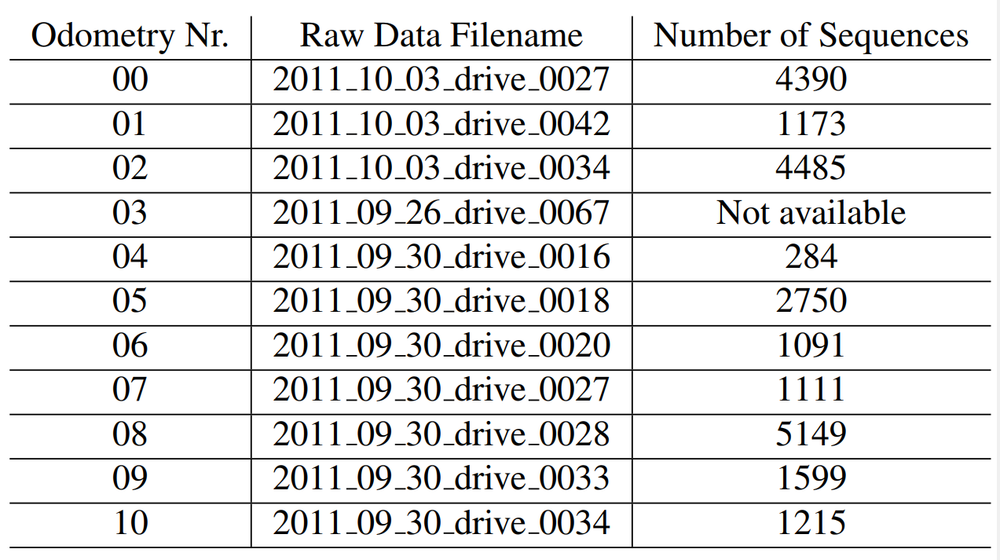

常用的 两种 Kitti 数据集:Odometry 与Raw
目录树（两个目录树是一样的）：
|-- image_00
| |-- data
| `-- timestamps.txt
|-- image_01
| |-- data
| `-- timestamps.txt
|-- image_02
| |-- data
| `-- timestamps.txt
|-- image_03
| |-- data
| `-- timestamps.txt
|-- oxts
| |-- data
| |-- dataformat.txt
| `-- timestamps.txt
`-- velodyne_points
|-- data
|-- timestamps.txt
|-- timestamps_end.txt
`-- timestamps_start.txt